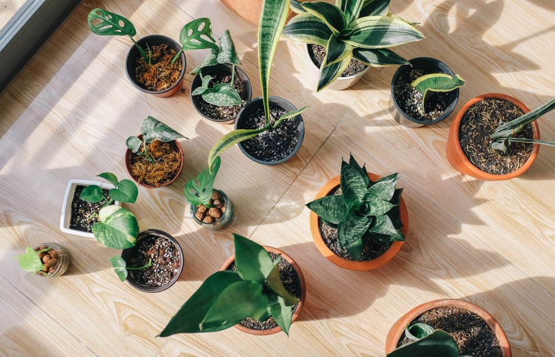
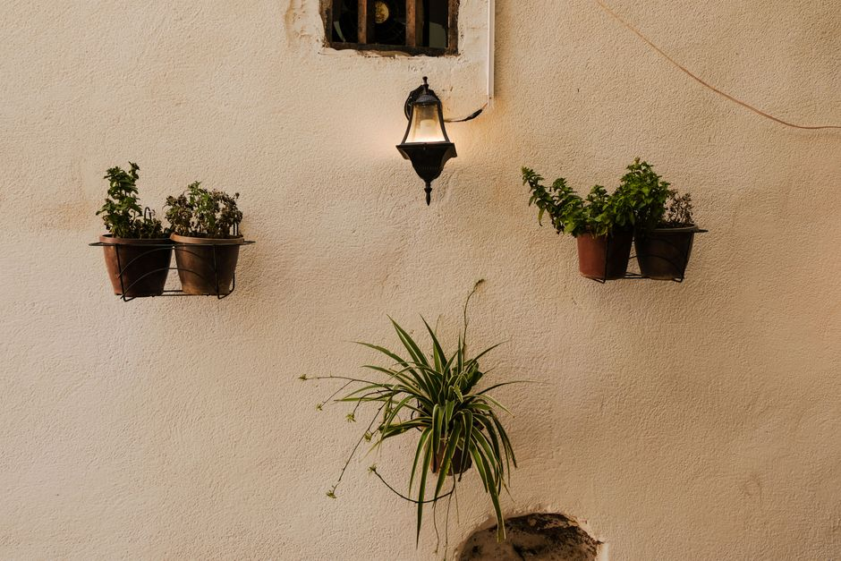
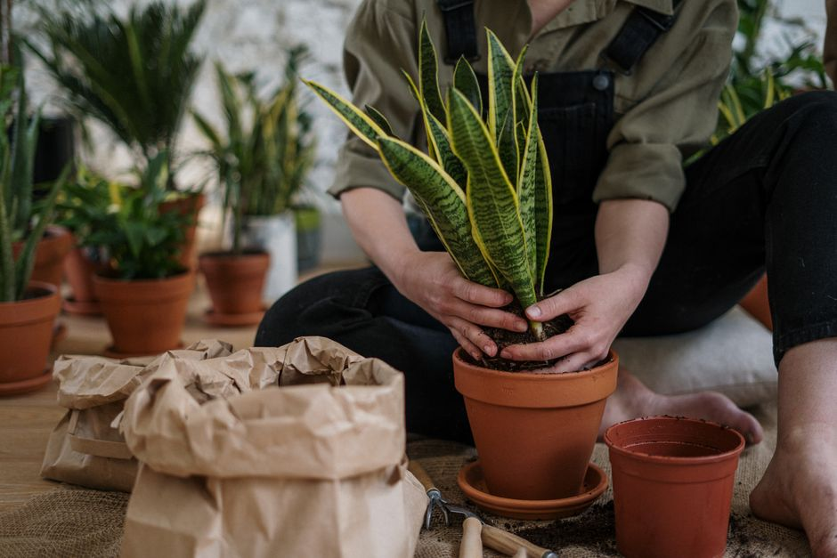

Ideal Indoor Plants for Beginners: A Comprehensive Guide

Photo: Huy Phan / Pexels
Starting out with indoor plants can be both exciting and overwhelming, especially for beginners. Choosing the right plants can make a world of difference in your ability to care for them successfully. Here are five indoor plants that are perfect for beginners, along with practical tips to help you get started.
1. Spider Plant (Chlorophytum comosum)

Photo: khebab salaheddine / Pexels
Why Choose It?
The spider plant is incredibly forgiving and adaptable, making it an excellent choice for novice plant enthusiasts. Its versatility extends to its ability to thrive in a wide range of light conditions, from bright indirect light to low light.
Care Tips
- Watering: Water the plant when the soil feels dry to the touch. Overwatering is a common mistake, so always ensure the pot has proper drainage.
- Lighting: Place it in a spot that receives bright, indirect light. Direct sunlight can scorch the leaves.
- Humidity: These plants can handle standard indoor humidity levels.
2. Snake Plant (Sansevieria trifasciata)

Photo: cottonbro studio / Pexels
Why Choose It?
The snake plant is one of the most resilient indoor plants, known for its ability to survive in low-light conditions and even improve air quality. It’s perfect for beginners who might miss a watering session.
Care Tips
- Watering: Water the plant every 2-4 weeks, depending on the humidity and light conditions. Ensure the soil dries out completely between waterings.
- Lighting: Thrives in low light but can tolerate brighter indirect light. Direct sunlight can cause sunburn.
- Maintenance: The snake plant can grow quite tall, so consider its space requirements when choosing a location.
3. Pothos (Epipremnum aureum)
Why Choose It?
Pothos is a versatile climber that can be trained to grow along a trellis or cascade from a hanging planter. It’s incredibly easy to care for and can thrive in a variety of environments.
Care Tips
- Watering: Water the plant when the soil is dry to the touch. Avoid overwatering, as this can lead to root rot.
- Lighting: Can grow in low light but prefers bright, indirect light. Direct sunlight can cause leaf burn.
- Maintenance: Cut back any yellow or brown leaves to encourage healthy growth.
4. ZZ Plant (Zamioculcas zamiifolia)
Why Choose It?
The ZZ plant is a drought-tolerant species that requires minimal care. It’s ideal for busy individuals who might not have time for frequent watering.
Care Tips
- Watering: Water the plant only when the soil is completely dry. ZZ plants can tolerate dry conditions but will benefit from occasional misting.
- Lighting: Can survive in low light but will grow better with bright, indirect light. Avoid direct sunlight.
- Maintenance: ZZ plants don’t require frequent pruning, but you can remove dead leaves to maintain the plant's appearance.
5. Peace Lily (Spathiphyllum)
Why Choose It?
Peace lilies are known for their elegant white blooms and ability to thrive in low-light conditions. They are also effective at purifying the air, making them a valuable addition to any home.
Care Tips
- Watering: Water the plant when the top inch of soil is dry. Overwatering can lead to root rot, so ensure the pot has proper drainage.
- Lighting: Thrives in low to medium indirect light. Direct sunlight can cause the leaves to turn yellow.
- Humidity: Peace lilies prefer high humidity. Consider misting the leaves or placing a humidifier nearby.
Conclusion
Choosing the right indoor plants as a beginner can set the stage for a rewarding gardening experience. The spider plant, snake plant, pothos, ZZ plant, and peace lily are all excellent choices for their ease of care and adaptability. By following the care tips outlined above, you can ensure that your plants thrive and bring a touch of green to your indoor spaces.
Happy planting!
Recommended products
As an Amazon Associate, I earn from qualifying purchases.